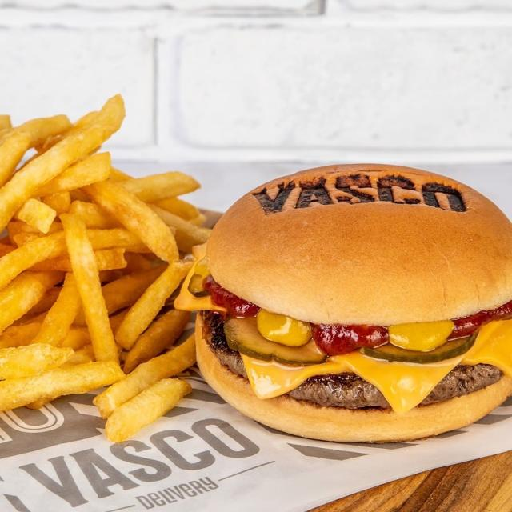

VASCO DA GAMA
Essa página foi feita para homenagear o time do meu coração
21 de agosto de 1898
Essa página foi criada com o intuito de mostrar um pouco do clube de regatas vasco da gama e algumas curiosidades à seu respeito.
ELENCO
mostrarei aqui o elenco atual do vasco da gama.
ELENCO:
Goleiros:
1-Léo Jardim
2-Ivan(EMPRESTADO  )
)
3-Halls
Zagueiros:
1-Léo
2-Manuel Capasso
3-Robson Bambu(EMPRESTADO  )
)
4-Anderson Conceição
5-Zé Vitor
6-Ulisses
Laterais:
1-Lucas Piton
2-Paulo Victor(EMPRESTADO  )
)
3-Riquelme
4-Edimar
5-Pumita Rodriguez
6-Gabriel Dias
7-Paulo Henrique(EMPRESTADO  )
)
8-Paulinho
Meias:
1-Jair
2-Patrick de Lucca
3-Zé Gabriel(EMPRESTADO )
4-Rodrigo
5-Andrey Santos(EMPRESTADO  )
)
6-Juninho
7-Matías Galarza
8-Marlon Gomes
9-Cauan Barros
10-Alex Teixeira
11-Nenê
12-Laranjeiras
Atacantes:
1-Eguinaldo
2-Erick Marcus
3-Luca Orellano
4-Gabriel Pec
5-Figueiredo
6-Vinícius
7-Pedro Raúl
TITULOS DE GRANDE EXPRESSÃO DO VASCO DA GAMA
Aqui se encontra uma tabela com os titulos de grande expressão do clube de regatas vasco da gama
| Competição | Títulos | Temporadas |
|---|---|---|
| Torneio Octogonal Rivadávia Corrêa Meyer |
|
| Competição | Títulos | Temporada |
|---|---|---|
| Torneio de Paris |
| Competição | Títulos | Temporada |
|---|---|---|
| Campeonato Sul-Americano de Campeões |
||
| Copa Libertadores da América | ||
| Copa Mercosul |
HINO DO COLOSSAL
Aqui se encontra o hino mais bonito do Brasil.
Vamos todos cantar de coração
A Cruz de Malta é o meu pendão
Tu tens o nome do heroico português
Vasco da Gama, a tua fama assim se fez!
Tua imensa torcida é bem feliz
Norte-Sul, Norte-Sul deste país
Tua estrela, na terra a brilhar
Ilumina o mar
No atletismo, és um braço
No remo, és imortal
No futebol, és um traço
De união Brasil-Portugal
No atletismo, és um braço
No remo, és imortal
No futebol, és um traço
De união Brasil-Portugal
Vamos todos cantar de coração
A Cruz de Malta é o meu pendão!
Tu tens o nome do heroico português
Vasco da Gama, a tua fama assim se fez!
Vamos todos cantar de coração
A Cruz de Malta é o meu pendão!
Tu tens o nome do heroico português
Vasco da Gama, a tua fama assim se fez!
No atletismo, és um braço
No remo, és imortal
No futebol, és um traço
De união Brasil-Portugal
No atletismo, és um braço
No remo, és imortal
No futebol, és um traço
De união Brasil-Portugal
CURIOSIDADES DA CAMISA

1- A camisa titular é a preta, não a branca
2– Cruz usada na camisa não é de Malta e sim Pátea, mas cruz original era da Ordem de Cristo
3-Faixas diagonais foram inspiradas no remo
4-Kappa vestiu o clube na “Era de Ouro” no fim dos anos 90
5-Primeiro escudo do Vasco era redondo
Posts Populares
